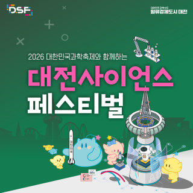
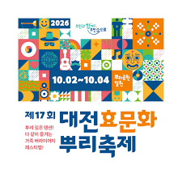
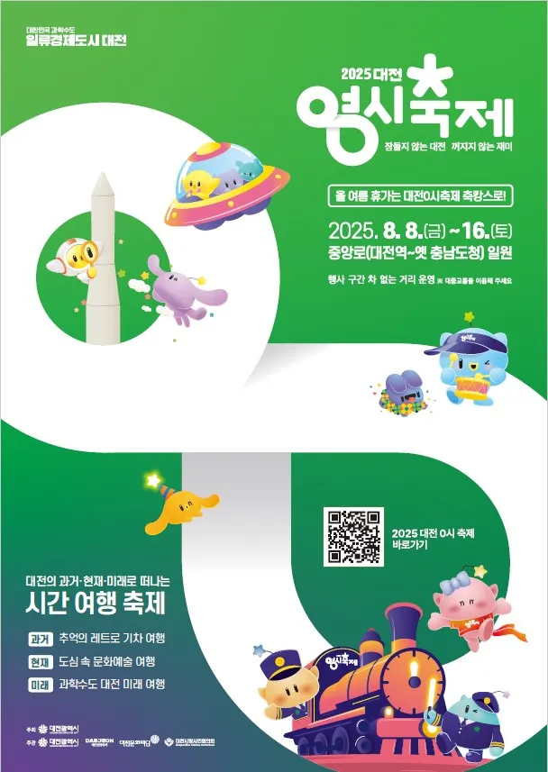
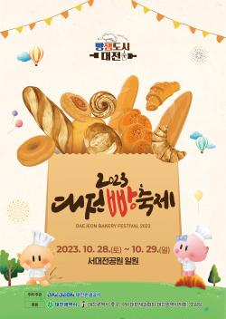
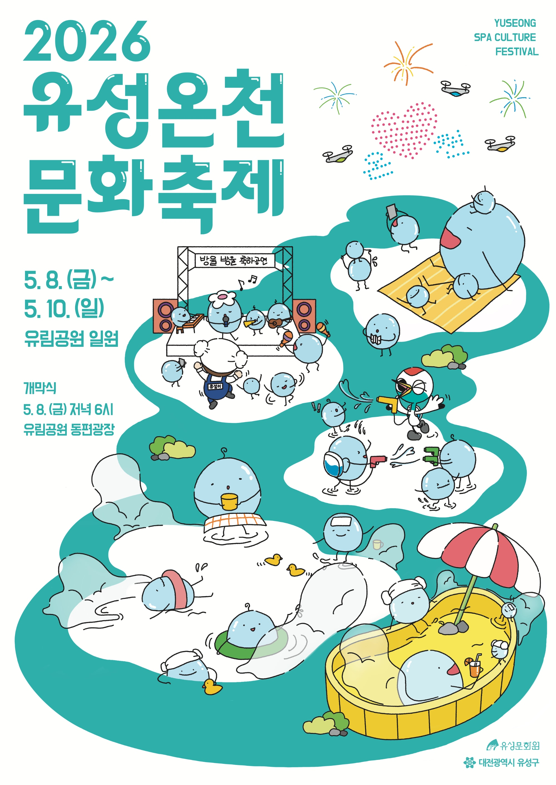
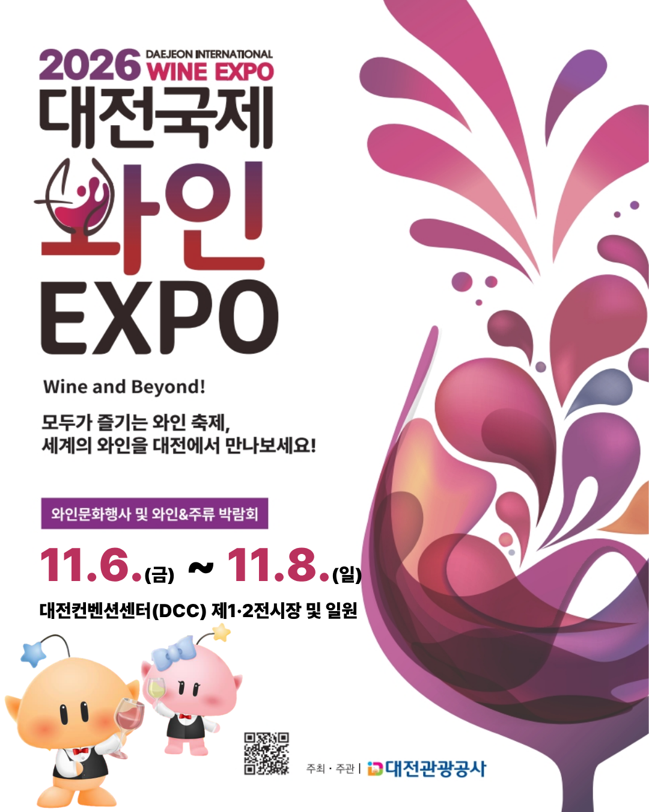
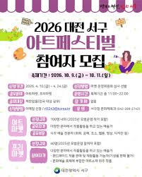
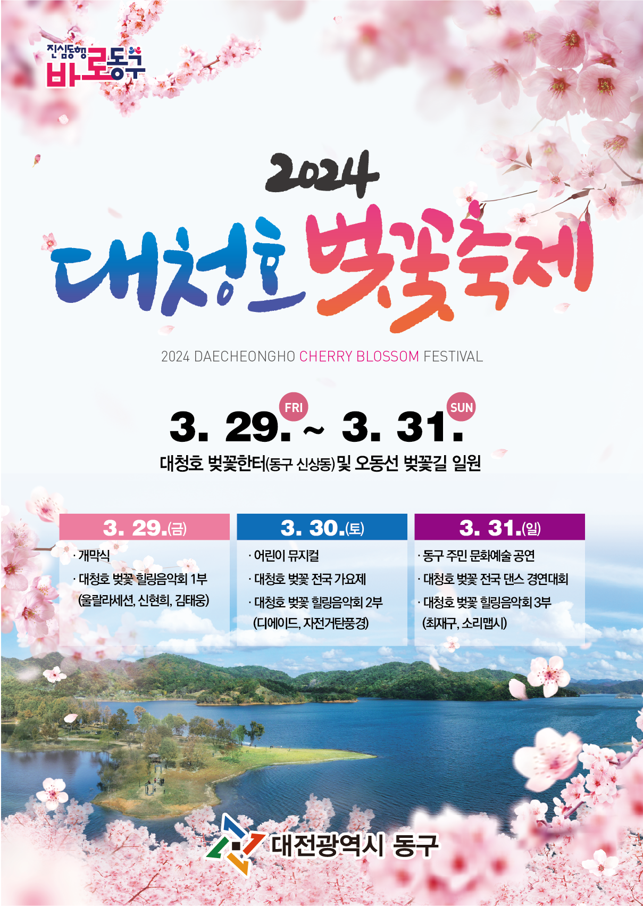
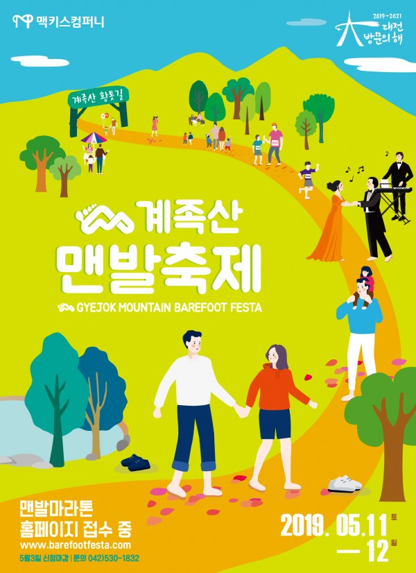

대전의 축제
대전에서 열리는 다양하고 신나는 축제들을 소개합니다
이름을 클릭하여 자세한 정보를 확인하세요!

사이언스 페스티벌
기간: 매년 10월 중
대한민국 과학수도 대전에서 과학과 기술을ㅇ 재미있게 체험하고 배울 수 있는 대표 과학 축제입니다.

효문화뿌리축제
기간: 매년 10월 중
뿌리공원에서 성씨 조형물을 둘러보고 나의 뿌리를 배우며 효 문화를 가족과 함께 즐기는 축제입니다.

대전 0시 축제
기간: 매년 8월 중
원도심 거리에서 밤새도록 다채로운 길거리 공연, 퍼레이드, 먹거리를 함께 즐길 수 있는 여름 대표 축제입니다.

대전 빵축제
기간: 매년 10월 중
대전의 다양하고 유명한 베이커리 빵들을 한자리에서 모두 맛보고 체험할 수 있는 달콤한 빵 축제입니다.

유성온천문화축제
기간: 매년 5월 중
전통 유성온천의 역사와 효능을 바탕으로 온천수 물총대첩, 야외 족욕 등 시원한 온천수를 만끽하는 축제입니다.

대전 국제와인엑스포
기간: 매년 9~10월 중
전 세계의 다채로운 와인들을 한곳에서 시음하고 국내외 와인 바이어들과 소통하는 국제적인 대전 와인 축제입니다.

서구힐링 아트페스티벌
기간: 매년 10월 중
샘머리공원과 보라매공원에서 예술가들의 멋진 미술 작품을 감상하고 도심 속 예술 치유를 즐기는 축제입니다.

대청호벚꽃축제
기간: 매년 4월 중
대청호반의 세상에서 가장 긴 벚꽃길을 배경으로 벚꽃 가요제 등 다양한 문화 행사를 즐기는 봄 축제입니다.

계족산 맨발축제
기간: 매년 5월 중
계족산 황톳길을 맨발로 걸으며 숲속 음악회와 다채로운 맨발 걷기 체험을 통해 힐링하는 축제입니다.